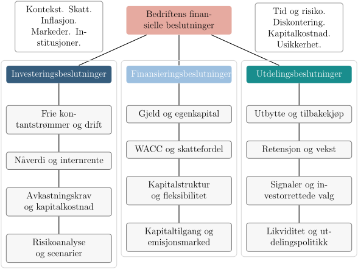

Fra økonomi til bedriftsøkonomi: Bedriftens finansielle beslutninger
1 Fra økonomi til bedriftsøkonomi: Bedriftens finansielle beslutninger

1.1 Hva er bedriftsøkonomi og hvorfor er det viktig?
1.1.1 Bedriften som økonomisk enhet
Bedrifter finnes fordi enkeltpersoner ikke kan produsere alt de trenger selv. En bedrift samler ressurser, organiserer arbeid og produserer varer og tjenester. Når vi studerer bedriftsøkonomi, ser vi på hvordan denne prosessen kan gjøres mest mulig effektiv og lønnsom.
1.1.2 Ressurser, produksjon og verdiskaping
Hver bedrift står overfor et enkelt spørsmål: Hvordan kan vi bruke de ressursene vi har på en måte som skaper mest mulig verdi? - Ressurser kan være penger, maskiner, bygninger eller menneskelig kunnskap. - Produksjon handler om å sette disse ressursene i arbeid. - Verdiskaping er resultatet, målt i hva bedriften klarer å tilby kunder, eiere og samfunnet.
Tenk på en kaffebar. Den må bestemme hvor mye kaffe som skal kjøpes inn, hvor mange ansatte som skal jobbe på morgenen, og hvilken pris som skal settes på en kopp. Alle disse valgene er små brikker i et større økonomisk puslespill.
1.1.3 Koblingen mellom samfunnsøkonomi og bedriftsøkonomi
I samfunnsøkonomien spør vi hvordan ressursene i samfunnet skal fordeles. I bedriftsøkonomien spør vi hvordan den enkelte bedriften skal bruke sine ressurser. De to perspektivene henger tett sammen. En bedrift som tar gode økonomiske beslutninger, skaper ikke bare verdi for eierne, men bidrar også til arbeidsplasser, skatteinntekter og produkter som samfunnet etterspør.
Derfor er bedriftsøkonomi viktig. Når vi lærer hvordan bedrifter tar økonomiske beslutninger, lærer vi samtidig hvordan verdiskaping skjer i praksis.